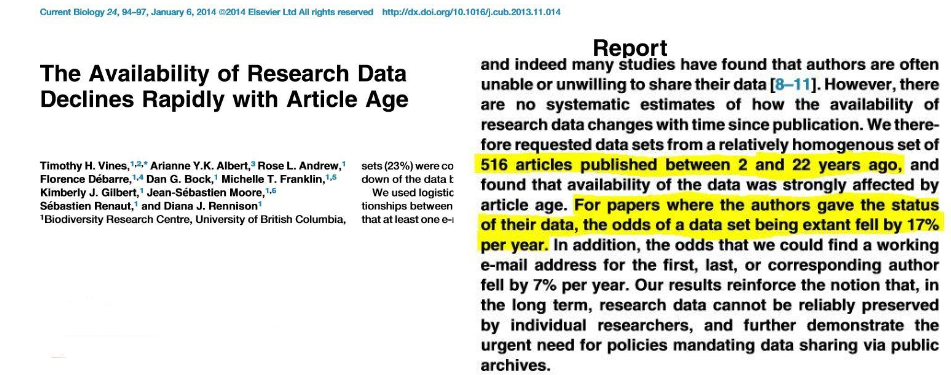
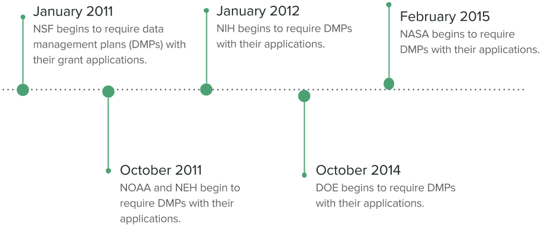

Collecting and Protecting Your Data
Vicky Steeves & Nicholas Wolf | April 8, 2017

Human Error
Disappearing Data
Research Data Management

Managing the way data is collected, processed, analyzed, preserved, and published for greater reuse by the community and the original researcher.
What is Data?
"the recorded factual material commonly accepted in the scientific community as necessary to validate research findings." -Federal Office of Management & Budget Circular A-110

Federal Regulations
Documenting Local Files

Basic Management Principles

- Use a file management system to annotate and locate files; use a systematic file naming system.
- Use "readme" files to annotate and explain file content.
- Use open file formats that are software agnostic.
Long Term Storage
Choose what you want to preserve/get to in the long term, but No matter WHAT, make sure you keep:
|
Put your data into an archival format!
|

Create a Researcher Identity
Open Researcher & Contributor ID
- free! persistent identifier for researchers (think DOI)
- link all your publications to you rather than someone with your same name!
- many journals are asking for an ORCID upon submission of materials
Do you have one? No? Let’s get you an ORCID.org!

Documentation with the Open Science Framework
Open Science Framework
- Wiki: document your lab procedures, standards, etc.
- Collaborators: add collaborators of all levels, on different parts of your project
- Components: sub-projects to organize your research
- Version Control: upload files of the same name & OSF will track your versions!
- Add-Ons: use OSF to bring together tools you use | GitHub
- Registrations: when you have an unchanging version of your project, register it & get a DOI!
Questions?
Email us: vicky.steeves@nyu.edu & nicholas.wolf@nyu.edu
Learn more about RDM: guides.nyu.edu/data_management
Get this presentation: guides.nyu.edu/data_management/resources
Make an appointment: guides.nyu.edu/appointment